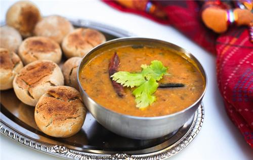
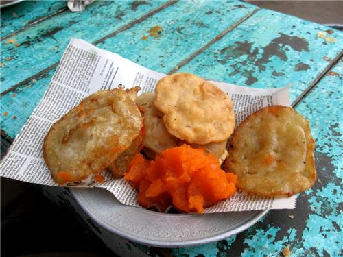

Rajasthan is the symbol of rich Indian culture and traditions, so how can the cuisine of the region be left out, which offers some of the best and most unique flavours you might have ever tasted. Sri Ganganagar in Rajasthan is a gastronomic delight and visitors from all over not just travel to witness the history and culture but also the delicious and inviting Rajasthani food. Though the dry region does not favours enough cultivation, still people have efficiently utilized the available resources.
Dal-Baati-Churmais one of the most famous dishes in the city. Five different varieties of lentils are used in the dal. Churma is a favorite sweet dish made from cereals and Baati is made of balls prepared from wheat that is steamed, baked and fried.
Papad and pickles are very famous accompaniments of the main fare. Some of the tidbits are Pudina Chutney, Imly ki Chutney Aam Launji, Launji, Badis , Pakodis, Moong Dal Papads, Mangodis and Masala Papads.
Food in Sri Ganganagar or for that matter, in the entire state of Rajasthan is very spicy. Most of the spices are used in dry and powered forms. Red chilies from the state are famous all over the world. They not only add wonderful color to the dishes but also add a distinct flavor. The other commonly used spices in the dishes are loong, ajwain, saunf, soonth, asafoetida, cardamom, cinnamom, kasuri methi and so on.
Dairy farming has not prospered in the city because of the climatic conditions and lack of proper vegetation. However, you can find plenty of camel and goat milk here that is sued to prepare dahi, malai, ghee, butter, soft cheese and paneer. The thick hot milk is consumed along with a pinch of haldi or cinnamon. To beat the scorching heat of the summer months people drink chilled lassi or buttermilk.
If you visit Sri Ganganagar make sure you do not miss out the sweets. Some of the very popular sweet dishes are Halwa - Puri, Moong Dal ka Halwa, Sooji ka Halwa, Besan ka Laddu, Motichur ka Laddu, Dal ka Laddu, Kheer, Kaju Katli, Mawa Kachori, Firni and so on.
Whether you want to order your food at office or home, you have plenty of restaurants in Sri Ganganagar that delivers food at your doorstep. This gives you the liberty to host parties or celebrate in private within the comforts of your home or office. Some of the restaurants offering home delivery services are:
135-H Block, Near Nehru Park, Sriganganagar - 335001
Phone: +(91)-9772750005, 9783840004
31, E-Block, Near HDFC Bank, Gaushala Road, Sriganganagar - 335001
Phone: +(91)-8058000900, 9461094600, 9314683949
Rohit Udhyog, Near Shiv Chowk, Opp.New Cloth Market,
Suratgarh Road, Sriganganagar - 335001
Phone: +(91)-9352815706, 7733972968
Phone: +(91)-154-2475823